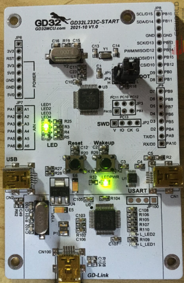
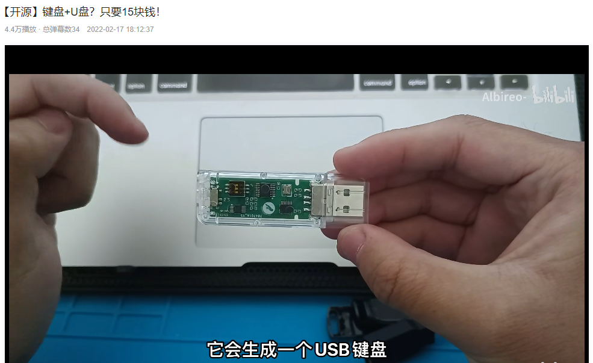

USB探索|0.偶遇GD32L233
1. 序章
早在除夕之夜说过自己萌生了设计一个简单的外设来进行Windows驱动探索的想法。并且看中了USB外设，因为USB接口使用方便，硬件设计也相对简单。
春节期间恰好遇到了电子工程世界上兆易创新做的评测活动，评测活板子使用MCU是GD32L233，这颗芯片支持USB2.0, 正好可以用这个来完成对Windows驱动的探索，也免得自己去设计电路，搞硬件了。这也简化了对固件程序开发的难度，因为现在的MCU厂商基本上都会提供固件库供嵌入式工程师使用。
幸运的是，在EEWORLD上申请后，竟然一下就通过了，而且是在活动快要结束的最后一批。中间正好赶上了春节，所以最后一批都是到年后才获取到板子。板子做的非常精简，调试器和开发核心板集中在一块巴掌大的小板子上。

拿到板子之后，因为板子上的接口都是mini USB接口，这种接口线都不太常见了。翻箱倒柜的找到了两根mini USB接口的线，翻出来了一块多年前的LCD显示屏。这个显示屏上之前做的超级玛丽，哈哈，那么正好可以在这个板子上移至一下。因为收到板子也是要做实验写评测文章的，正好这个也可以拿来写篇帖子。移植好的样子就是这样的。

因为GD32L233的主频只有64M, 为了安全继续使用这个板子也不太敢超频尝试。所以运行超级玛丽还是非常的卡顿，间隔丢帧也只能保证在2s一帧的样子。
后续就是开始探索USB设备固件开发和Windows下的USB设备驱动开发了！
2. 后续主题
因为先要开发固件，然后才是Windows下的驱动，所以后续肯定是固件开发和驱动开相关文章穿插进行的。然而固件和驱动可以说是完全两个不同的领域。所以对固件感兴趣的伙伴可以重点关注固件相关的分享，而对驱动感兴趣的伙伴可以重点关注驱动相关的分享。
目前暂定的计划是有以下这些内容：
- USB键盘 这个是windows自带有HID驱动支持的，所以重点是在固件的开发上。
- USB鼠标 和USB键盘一样，也是有windows自带有驱动支持的，所以重点是也在固件的开发上。
- USB HID设备 这个就是基于1，2的固件小改动进行Windows驱动的开发和探索。
- USB自定义设备 融合固件开发和Windows驱动。
上面的内容都是要基于USB协议规范的，深入到USB细节，都算是有些硬核东西的，所以更新上可能不会特别的快。
3. 额外的分享
分享一个昨天正好在B站上看到一个非常nice的USB设备。这个设备使用的是windows自带的驱动，对固件感兴趣的小伙伴可以去尝试一下。 
- 原文作者：Binean
- 原文链接：https://bzhou830.github.io/post/20220127GD32USB01/
- 版权声明：本作品采用知识共享署名-非商业性使用-禁止演绎 4.0 国际许可协议进行许可，非商业转载请注明出处（作者，原文链接），商业转载请联系作者获得授权。